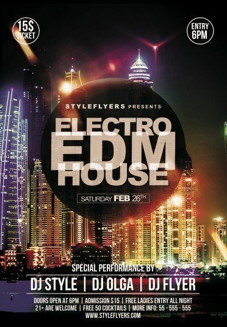
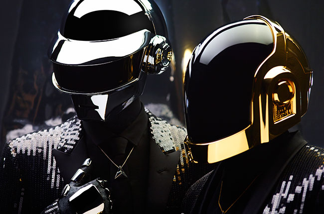

HOUSE
House

하우스 음악(house music)이란 1980년 중반부터 시작된 전자 댄스 음악 스타일의 총칭이다.
하우스 음악은 드럼 머신에 의해 생성된 4/4박자의 리듬과 정적인 베이스 라인을 공통적으로 가지고 있다.
일렉트로 하우스란 일렉트로니카 음악 장르 중 하우스의 하위 장르인데, 굉장히 하드한 분야로 일컬어진다.

현재의 하우스계열 EDM씬을 있게한 일등 공신 DAFT PUNK.
멤버는 토마 방갈테르와 기마뉘엘 드 오멩크리스토로 구성되어 있다. Discovery 당시에만 해도 은색 헬멧의 모양이 입꼬리가 올라간 웃는 모양이었으나, Human After All 이후부터 일자모양으로 바뀌었다. 헬멧 모양의 변천사
이 듀오는 전자 음악이라는 비주류 장르로 엄청난 인기를 끌었으며 지금도 가장 영향력 있는 전자 음악의 대가이다. 이를 증명해주듯 56회 그래미 어워드에서는 5관왕을 차지하여 이제는 일렉트로니카 뮤지션을 넘어 대표적인 팝 뮤지션의 반열에 올랐다.
이 천재 듀오를 아는 사람은 많진 않지만 그들의 음악은 아는 사람이 꽤 있는 모양, 또 광고음악으로도 많이 사용되었다. 특히 1997년 Homework 앨범의 'Da Funk'와 2005년 Human After All의 Robot Rock은 매우 유명한 곡이다.
누군지 모르겠다면 당장 그들의 노래를 들으러가기!